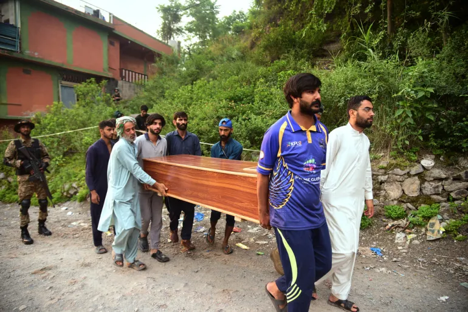
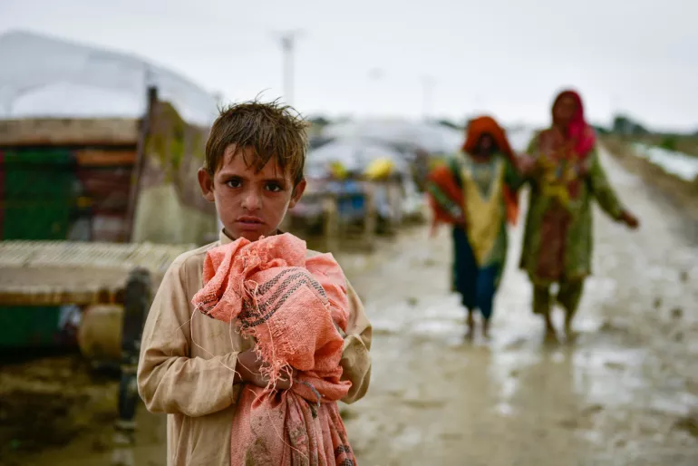

WHY SHOULD THE INNOCENT SUFFER FOR THE SINS OF THE STRANGERS?
This article is not political. It’s personal. It’s a plea to every reader: think before you cheer for war. Look before you blame. And always, always speak for the innocent — wherever they live.
The Cost of War Isn’t Always Political – It's Personal
When political tensions boil over, or terrorist actions provoke retaliation, it's not always the guilty who pay the price. In many cases, the victims are the innocent — families, children, students, workers — people who never picked up a weapon or voted for violence.

Recent events have brought this tragedy to light again. The Indian airstrike into Pakistani territory, known in media as the "Sindur Mission," was a direct response to terrorism. But beneath the headlines, one truth stands firm — lives on both sides trembled, especially those of ordinary people.
Are We Fighting Terrorism or Targeting Humanity?
When a nation responds to terror, the action is often justified. But when fighter jets cross borders, the ripple hits everyone. Bombs don’t have ethics. Missiles don’t recognize the innocent. And every time we retaliate, there’s a risk of collateral damage that crushes the very people we claim to protect.
“A terrorist doesn’t represent a nation, yet nations suffer for the terrorist’s crime.”

India and Pakistan – A History of Hostility, A Future at Risk
Both India and Pakistan have deep-rooted issues that go back decades. But with modern warfare, the stakes have become higher, and the price heavier. Each conflict threatens more lives — not of soldiers, but of sons and daughters trying to go to school, parents trying to put food on the table.
Each missile could land on a home. Each warning could become a whisper of fear. And the hatred that fuels it? Often spread by leaders who are far away from the actual danger.
A Call for Justice – Not Revenge
Justice doesn’t mean punishing the many for the mistakes of the few. It means rising above hate and holding the guilty accountable — not entire communities. If we continue to bomb, burn, and blame without discrimination, we will lose the one thing that matters most: our humanity.

This article is not political. It’s personal. It’s a plea to every reader: think before you cheer for war. Look before you blame. And always, always speak for the innocent — wherever they live.